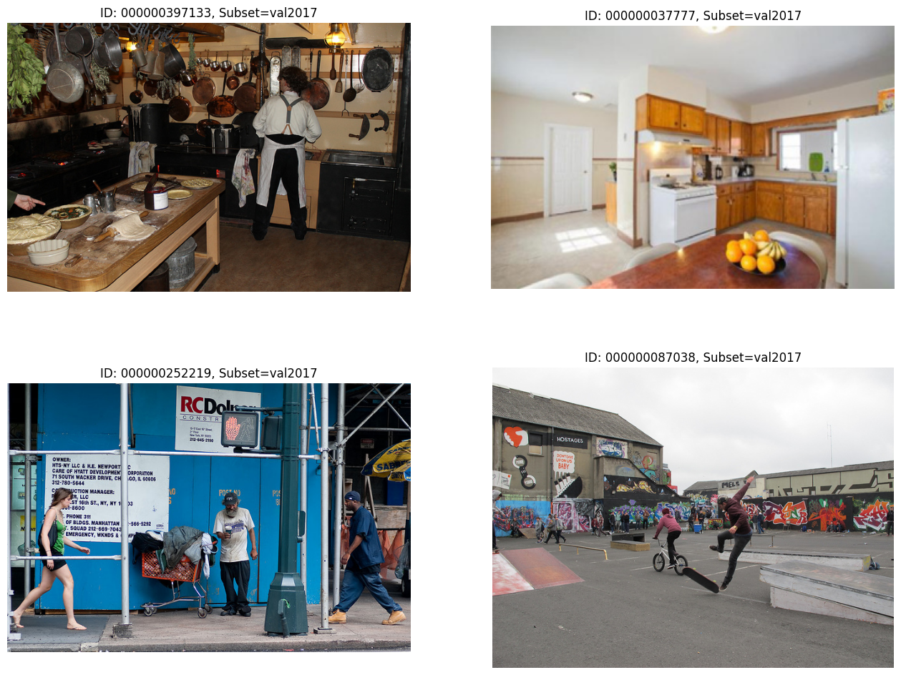
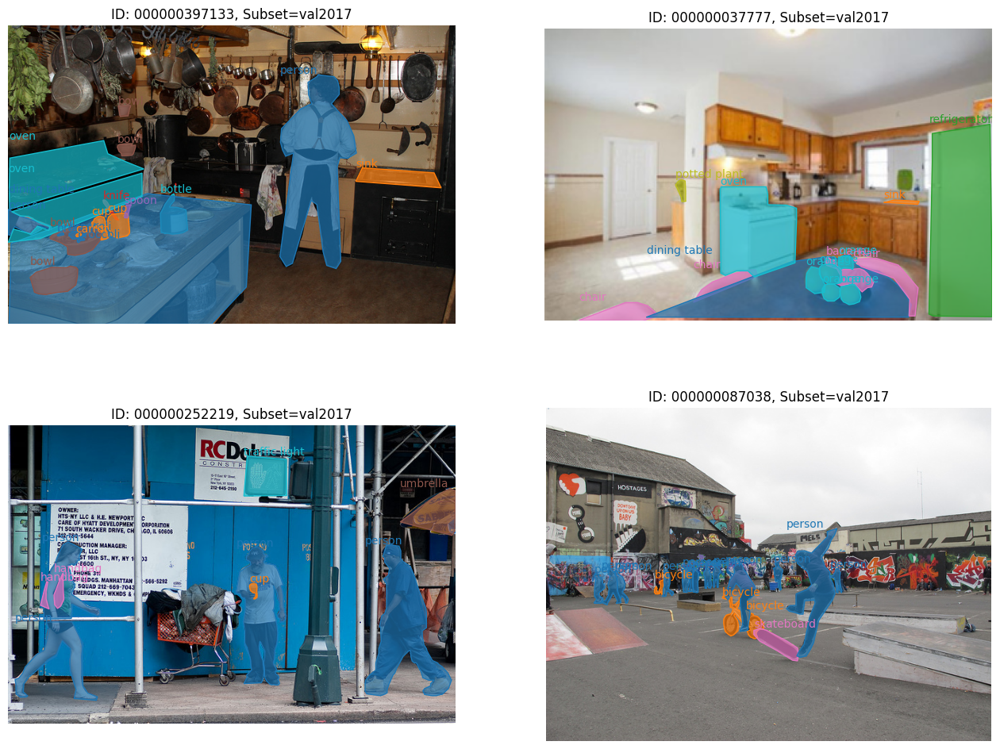
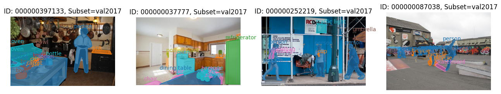
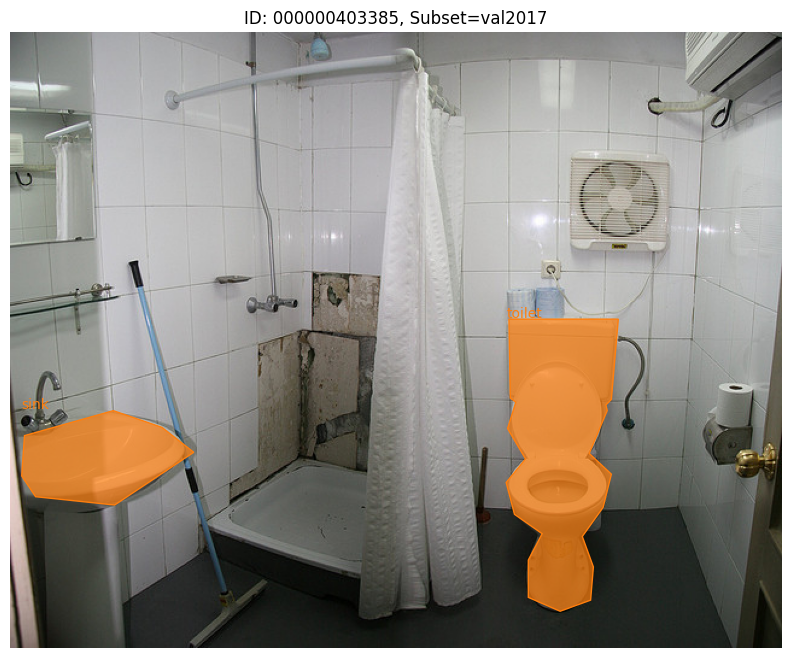
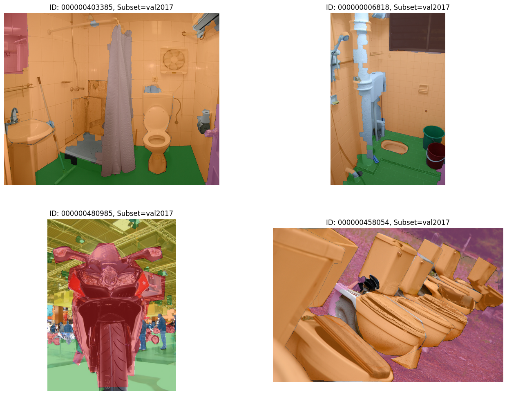
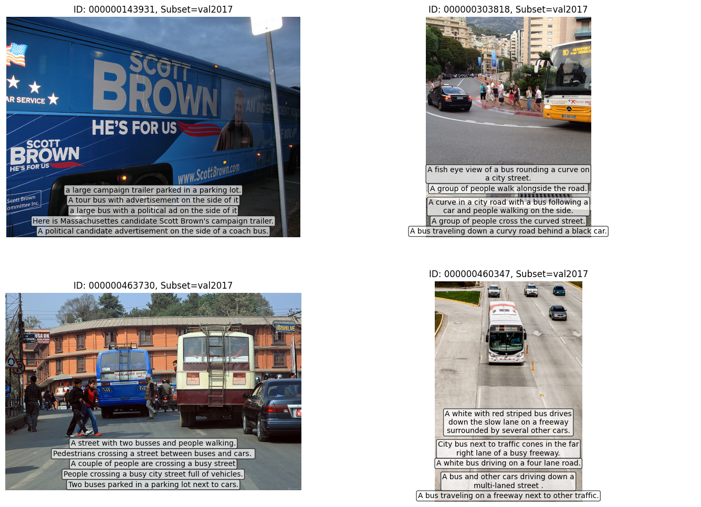

Visualize Your Data#

In this notebook example, we’ll take a look at Datumaro visualization Python API. Specifically, we are going to provide the example codes for instance segmentation and captioning tasks with MS-COCO 2017 dataset.
Prerequisite#
Download COCO 2017 validation dataset#
[2]:
!mkdir coco_dataset
!curl http://images.cocodataset.org/zips/val2017.zip --output coco_dataset/val2017.zip --silent
!curl http://images.cocodataset.org/annotations/annotations_trainval2017.zip --output coco_dataset/annotations_trainval2017.zip --silent
!curl http://images.cocodataset.org/annotations/panoptic_annotations_trainval2017.zip --output coco_dataset/panoptic_annotations_trainval2017.zip --silent
% Total % Received % Xferd Average Speed Time Time Time Current
Dload Upload Total Spent Left Speed
100 777M 100 777M 0 0 2997k 0 0:04:25 0:04:25 --:--:-- 7251k0:31 0:00:10 0:20:21 913k
% Total % Received % Xferd Average Speed Time Time Time Current
Dload Upload Total Spent Left Speed
100 241M 100 241M 0 0 3601k 0 0:01:08 0:01:08 --:--:-- 4707k
% Total % Received % Xferd Average Speed Time Time Time Current
Dload Upload Total Spent Left Speed
100 820M 100 820M 0 0 3661k 0 0:03:49 0:03:49 --:--:-- 4215k
Extract the downloaded dataset#
We extract all the downloaded files and remove train2017 annotation files (e.g., instances_train2017.json) because we only downloaded the val2017 images. After running this cell, you will get the following directory structure.
coco_dataset
├── annotations
│ ├── captions_val2017.json
│ ├── instances_val2017.json
│ ├── panoptic_val2017
│ ├── panoptic_val2017.json
│ └── person_keypoints_val2017.json
├── images
│ └── val2017
[1]:
!unzip -q coco_dataset/val2017.zip -d coco_dataset/images
!unzip -q coco_dataset/annotations_trainval2017.zip -d coco_dataset
!unzip -q coco_dataset/panoptic_annotations_trainval2017.zip -d coco_dataset
!unzip -q coco_dataset/annotations/panoptic_val2017.zip -d coco_dataset/annotations
!find coco_dataset -name "*_train2017.json" | xargs rm
Visualize dataset#
Visualize COCO instance segmentation dataset#
[1]:
# Copyright (C) 2021 Intel Corporation
#
# SPDX-License-Identifier: MIT
import datumaro as dm
dataset = dm.Dataset.import_from("coco_dataset", format="coco_instances")
print("Subset candidates:", dataset.subsets().keys())
subset = next(dataset.subsets().keys()) # val2017
print("Subset:", subset)
WARNING:root:File 'coco_dataset/annotations/panoptic_val2017.json' was skipped, could't match this file with any of these tasks: coco_instances
WARNING:root:File 'coco_dataset/annotations/person_keypoints_val2017.json' was skipped, could't match this file with any of these tasks: coco_instances
WARNING:root:File 'coco_dataset/annotations/captions_val2017.json' was skipped, could't match this file with any of these tasks: coco_instances
Subset candidates: dict_keys(['val2017'])
Subset: val2017
[2]:
def get_ids(dataset: dm.Dataset, subset: str):
ids = []
for item in dataset:
if item.subset == subset:
ids += [item.id]
return ids
ids = get_ids(dataset, subset)
print("DatasetItem ids:", ids[:4])
DatasetItem ids: ['000000397133', '000000037777', '000000252219', '000000087038']
In this cell, we only draw 4 images (ids[:4]) without any annotations (setting alpha=0).
[3]:
visualizer = dm.Visualizer(dataset, figsize=(16, 12), alpha=0)
fig = visualizer.vis_gallery(ids[:4], subset, (None, None))
fig.show()

In this time, we’ll draw polygon annotations (instance segmentation task) by setting alpha=0.7. It will automatically infer the grid size of gallery as (2, 2) from the number of input samples.
[4]:
visualizer = dm.Visualizer(dataset, figsize=(16, 12), alpha=0.7)
fig = visualizer.vis_gallery(ids[:4], subset, grid_size=(None, None))
fig.show()

In this example, we draw 4 samples in a row. Thus, the gallery has a (1, 4) grid by giving grid_size=(1, 4).
[5]:
visualizer = dm.Visualizer(dataset, figsize=(16, 8), alpha=0.7)
fig = visualizer.vis_gallery(ids[:4], subset, grid_size=(1, 4))
fig.show()

It is also possible to visualize a sample one by one.
[6]:
fig = visualizer.vis_one_sample(ids[5], subset)
fig.show()

Visualize COCO panoptic segmentation dataset#
[8]:
dataset = dm.Dataset.import_from("coco_dataset", format="coco_panoptic")
ids = get_ids(dataset, subset)
print("DatasetItem ids:", ids[5:9])
visualizer = dm.Visualizer(dataset, figsize=(16, 12), alpha=0.5)
fig = visualizer.vis_gallery(ids[5:9], subset, grid_size=(None, None))
fig.show()
WARNING:root:File 'coco_dataset/annotations/instances_val2017.json' was skipped, could't match this file with any of these tasks: coco_panoptic
WARNING:root:File 'coco_dataset/annotations/person_keypoints_val2017.json' was skipped, could't match this file with any of these tasks: coco_panoptic
WARNING:root:File 'coco_dataset/annotations/captions_val2017.json' was skipped, could't match this file with any of these tasks: coco_panoptic
DatasetItem ids: ['000000403385', '000000006818', '000000480985', '000000458054']

Visualize COCO captions dataset#
[9]:
dataset = dm.Dataset.import_from("coco_dataset", format="coco_captions")
ids = get_ids(dataset, subset)
print("DatasetItem ids:", ids[20:24])
visualizer = dm.Visualizer(dataset, figsize=(16, 12), alpha=0.7)
fig = visualizer.vis_gallery(ids[20:24], subset, grid_size=(None, None))
fig.show()
WARNING:root:File 'coco_dataset/annotations/panoptic_val2017.json' was skipped, could't match this file with any of these tasks: coco_captions
WARNING:root:File 'coco_dataset/annotations/instances_val2017.json' was skipped, could't match this file with any of these tasks: coco_captions
WARNING:root:File 'coco_dataset/annotations/person_keypoints_val2017.json' was skipped, could't match this file with any of these tasks: coco_captions
DatasetItem ids: ['000000143931', '000000303818', '000000463730', '000000460347']
